소방설비기사(전기분야) (2013-09-28 기출문제)
1과목: 소방원론
1. 표면온도가 350℃ 인 전기히터의 표면온도를 750℃ 로 상승시킬 경우, 복사에너지는 처음보다 약 몇 배로 상승되는가?
- 1.64
- 2.14
- 4.58
- 7.27
(정답률: 64%)
2. 다음 중 인화성 물질이 아닌 것은?
- 기어유
- 질소
- 이황화탄소
- 에테르
(정답률: 77%)

3. 다음 중 화재하중을 나타내는 단위는?
- kcal/kg
- ℃/m2
- kg/m2
- kg/kcal
(정답률: 84%)
4. 상온, 상압에서 액체인 물질은?
- CO2
- Halon 1301
- Halon 1211
- Halon 2402
(정답률: 78%)
5. 가스 A가 40vol%, 가스 B가 60vol% 로 혼합된 가스의 연소하한계는 몇 vol% 인가? (단, 가스 A 의 연소하한계는 4.9vol% 이며, 가스 B의 연소하한계는 4.15vol% 이다.)
- 1.82
- 2.02
- 3.22
- 4.42
(정답률: 63%)
6. 가연성의 기체나 액체, 고체에서 나오는 분해가스의 농도를 엷게 하여 소화하는 방법은?
- 냉각소화
- 제거소화
- 부촉매소화
- 희석소화
(정답률: 82%)
7. 화재 분류에서 C급 화재에 해당하는 것은?
- 전기화재
- 차량화재
- 일반화재
- 유류화재
(정답률: 89%)
8. 니트로셀룰로오스에 대한 설명으로 잘못된 것은?
- 질화도가 낮을수록 위험성이 크다.
- 물을 첨가하여 습윤시켜 운반한다.
- 화약의 원료로 쓰인다.
- 고체이다.
(정답률: 75%)
9. 소화약제로서 물 1g 이 1기압, 100℃ 에서 모두 증기로 변할 때 열의 흡수량은 몇 cal 인가?
- 429
- 499
- 539
- 639
(정답률: 84%)
10. 다음 중 인화점이 가장 낮은 물질은?
- 메틸에틸케톤
- 벤젠
- 에탄올
- 디에틸에테르
(정답률: 72%)
11. 건물 내부의 화재시 발생한 연기의 농도(감광계수)와 가시거리의 관계를 나타낸 것으로 틀린 것은?
- 감광계수 0.1일 때 가시거리는 20~30m 이다.
- 감광계수 0.3일 때 가시거리는 10~20m 이다.
- 감광계수 1.0일 때 가시거리는 1~2m 이다.
- 감광계수 10일 때 가시거리는 0.2~0.5m 이다.
(정답률: 71%)
12. 일반적인 화재에서 연소 불꽃 온도가 1500℃ 이었을 때의 연소 불꽃의 색상은?
- 적색
- 휘백색
- 휘적색
- 암적색
(정답률: 80%)
13. 소화의 원리로 가장 거리가 먼 것은?
- 가연성 물질을 제거한다.
- 불연성 가스의 공기 중 농도를 높인다.
- 가연성 물질을 냉각시킨다.
- 산소의 공급을 원활히 한다.
(정답률: 87%)
14. Halon 2402 의 화학식은?
- C2H4Cl2
- C2Br4F2
- C2Cl4Br2
- C2F4Br2
(정답률: 80%)
15. 건물의 피난동선에 대한 설명으로 옳지 않은 것은?
- 피난동선은 가급적 단순한 형태가 좋다.
- 피난동선은 가급적 상호 반대방향으로 다수의 출구와 연결되는 것이 좋다.
- 피난동선은 수평동선과 수직동선으로 구분된다.
- 피난동선은 복도, 계단을 제외한 엘리베이터와 같은 피난전용의 통행구조를 말한다.
(정답률: 86%)
16. 건축물에서 주요 구조부가 아닌 것은?
- 차양
- 주계단
- 내력벽
- 기둥
(정답률: 86%)
17. 기온이 20℃ 인 실내에서 인화점이 70℃ 인 가연성의 액체표면에 성냥불 한개를 던지면 어떻게 되는가?
- 즉시 불이 붙는다.
- 불이 붙지 않는다.
- 즉시 폭발한다.
- 즉시 불이 붙고 3~5초 후에 폭발한다.
(정답률: 71%)
18. 위험물안전관리법령상 위험물에 해당하지 않는 물질은?
- 질산
- 과염소산
- 황산
- 과산화수소
(정답률: 56%)
19. 공기 중의 산소를 필요로 하지 않고 물질 자체에 포함되어 있는 산소에 의하여 연소하는 것은?
- 확산연소
- 분해연소
- 자기연소
- 표면연소
(정답률: 89%)
20. 밀폐된 공간에 이산화탄소를 방사하여 산소의 체적 농도를 12% 되게 하려면 상대적으로 방사된 이산화탄소의 농도는 얼마가 되어야 하는가?
- 25.40%
- 28.70%
- 38.35%
- 42.86%
(정답률: 65%)
2과목: 소방전기회로
21. L-C 직렬회로의 공진조건은?
- wL=1/wC
- wL=wC
- wL+wC=0
- wL+wC=1
(정답률: 71%)
22. 그림에서 1[Ω]의 저항 단자에 걸리는 전압의 크기는?
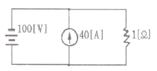
- 40[V]
- 60[V]
- 100[V]
- 140[V]
(정답률: 64%)
23. 그림과 같은 반파정류회로에 스위치 A를 사용하여 부하 저항 RL 을 떼어 냈을 경우, 콘덴서 C의 충전전압[V]은?
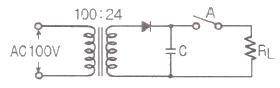
- 12π
- 24π
- 12√2
- 24√2
(정답률: 74%)
24. 논리식
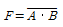
와 같은 것은?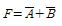
- F=A+B
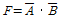
- F=A ㆍ B
(정답률: 76%)
25. △결선된 부하를 Y결선으로 바꾸면 소비전력은 어떻게 되는가? (단, 선간전압은 일정하다.)
- 3배로 늘어난다.
- 9배로 늘어난다.
- 1/3로 줄어든다.
- 1/9로 줄어든다.
(정답률: 71%)
26. 내부저항이 200[Ω]이며 직류 120[mA]인 전류계를 6[A]까지 측정할 수 있는 전류계로 사용하고자 한다. 어떻게 하면 되겠는가?
- 24[Ω]의 저항을 전류계와 직렬로 연결한다.
- 12[Ω]의 저항을 전류계와 병렬로 연결한다.
- 약 6.24[Ω]의 저항을 전류계와 직렬로 연결한다.
- 약 4.08[Ω]의 저항을 전류계와 병렬로 연결한다.
(정답률: 68%)
27. 그림과 같은 회로에서 b-d 사이의 전압을 50[V]로 하려면 콘덴서 C의 정전용량은 몇 [μF] 인가?
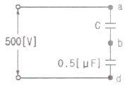
- 5.6[μF]
- 0.56[μF]
- 0.⑤6[μF]
- 0.0⑤6[μF]
(정답률: 58%)
28. 발전기의 조속기에 사용되는 제어는?
- 자동조정
- 서보제어
- 프로세스제어
- 추종제어
(정답률: 50%)
29. 직류전동기의 회전수는 자속이 감소하면 어떻게 되는가?
- 속도가 저하한다.
- 불변이다.
- 전동기가 정지한다.
- 속도가 상승한다.
(정답률: 57%)
30. 자동제어계에서 각 요소를 블록선도로 표시할 때 각 요소는 전달함수로 표시한다. 신호의 전달경로는 무엇으로 표현하는가?
- 접점
- 점선
- 화살표
- 스위치
(정답률: 80%)
31. 시퀀스제어에 관한 설명 중 옳지 않은 것은?
- 기계적 계전기접점이 사용된다.
- 논리회로가 조합 사용된다.
- 시간 지연요소가 사용된다.
- 전체시스템에 연결된 접점들이 일시에 동작할 수 있다.
(정답률: 82%)
32. 그림과 같은 다이오드 게이트 회로에서 출력전압은? (단, 다이오드내의 전압강하는 무시한다.)
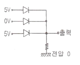
- 10V
- 5V
- 1V
- 0V
(정답률: 84%)
33. 동기발전기의 병렬운전 조건으로서 옳지 않은 것은?
- 상회전 방향이 같을 것
- 발생전압의 크기가 같을 것
- 기전력의 위상이 같을 것
- 회전수가 같을 것
(정답률: 67%)
34. 발전기의 부하가 불평형이 되어 발전기의 회전자가 과열 소손되는 것을 방지하기 위하여 설치하는 계전기는?
- 역상과전류계전기
- 부족전압계전기
- 비율차등계전기
- 온도계전기
(정답률: 52%)
35. 부궤한 증폭기의 장점에 해당되는 것은?
- 전력이 절약된다.
- 안정도가 증진된다.
- 증폭도가 증가된다.
- 능률이 증대된다.
(정답률: 67%)
36. 비사인파의 일반적인 구성이 아닌 것은?
- 직류분
- 기본파
- 삼각파
- 고조파
(정답률: 63%)
37. 회로에서 주파수를 60[Hz], 단상교류전압 V=100[V], 저항 R=18.8[Ω]일 때 L의 크기는? (단, L을 가감해서 R의 전력을 L=0일 때의 1/2이라 한다.)
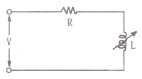
- 10[mH]
- 50[mH]
- 100[mH]
- 150[mH]
(정답률: 50%)
38. 그림의 논리기호를 표시한 것으로 옳은 식은?
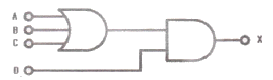
- X=(AㆍBㆍC)ㆍD
- X=(A+B+C)ㆍD
- X=(AㆍBㆍC)+D
- X=A+B++D
(정답률: 77%)
39. 자동화재 탐지설비의 수신기(정격 전압 220V인 경우)의 금속제 외함에 행하여야 하는 접지공사는?(관련 규정 개정전 문제로 여기서는 기존 정답인 3번을 누르면 정답 처리됩니다. 자세한 내용은 해설을 참고하세요.)
- 제1종 접지공사
- 제2종 접지공사
- 제3종 접지공사
- 특별 제3종 접지공사
(정답률: 68%)
40. 축전지 용액의 저항을 측정할 때 사용하는 것은?
- 절연저항계
- 콜라우시브리지
- 회로시험기
- 용액비중측정기
(정답률: 73%)
3과목: 소방관계법규
41. 지정수량의 10배 이상의 위험물을 저장 또는 취급하는 제조소 등(이동탱크저장소를 제외한다)에는 화재발생시 이를 알릴 수 있는 경보설비를 설치하여야 한다. 이 경보설비의 종류로서 옳지 않은 것은?
- 확성장치(휴대용확성기 포함)
- 비상방송설비
- 자동화재탐지설비
- 자동화재속보설비
(정답률: 55%)
42. 소방대상물의 관계인은 소방대상물에 화재, 재난ㆍ재해 등이 발생한 경우 소방대가 현장에 도착할 때까지 사람을 구출하는 조치 또는 불을 끄거나 불이 번지지 않도록 조치를 하여야 한다. 정당한 사유 없이 이를 위반한 관계인에 대한 벌칙은?
- 1년 이하의 징역
- 1000만원 이하의 벌금
- 500만원 이하의 벌금
- 100만원 이하의 벌금
(정답률: 63%)
43. 전문소방시설공사업의 법인의 자본금은?
- 5천만원 이상
- 1억원 이상
- 2억원 이상
- 3억원 이상
(정답률: 70%)
44. 소방방재청장ㆍ소방본부장 또는 소방서장은 소방업무를 전문적이고 효과적으로 수행하기 위하여 소방대원에게 필요한 교육ㆍ훈련을 실시하여야 하는데, 다음 설명 중 옳지 않은 것은?
- 소방교육ㆍ훈련은 2년마다 1회 이상 실시하되, 교육 훈련기간은 2주 이상으로 한다.
- 법령에서 정한 것 이외의 소방교육ㆍ훈련의 실시에 관하여 필요한 사항은 소방방재청장이 정한다.
- 교육ㆍ훈련의 종류는 화재진압훈련, 인명구조훈련, 응급처치훈련, 민방위훈련, 현장지휘훈련이 있다.
- 현장지휘훈련은 지방소방위ㆍ지방소방경ㆍ지방소방령 및 지방소방정을 대상으로 한다.
(정답률: 67%)
45. 특정소방대상물의 각 부분으로부터 수평거리 140m 이내에 공공의 소방을 위한 소화전이 화재안전기준이 정하는 바에 따라 적합하게 설치되어 있는 경우에 설치가 면제되는 것은?
- 옥외소화전
- 연결송수관
- 연소방지설비
- 상수도소화용수설비
(정답률: 54%)
46. 소방안전교육사와 관련된 내용으로 옳지 않은 것은?
- 소방안전교육사의 자격시험 실시권자는 안전행정부장관이다.
- 소방안전교육사는 소방안전교육의 기획ㆍ진행ㆍ분석ㆍ평가 및 교수업무를 수행한다.
- 한정치산자는 소방안전교육사가 될 수 없다.
- 소방안전교육사를 소방방재청에 배치할 수 있다.
(정답률: 66%)
47. 소방안전관리자 선임에 관한 설명 중 옳은 것은?
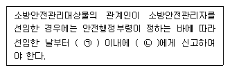
- ㉠ 14일 ㉡ 시ㆍ도지사
- ㉠ 14일 ㉡ 소방본부장이나 소방서장
- ㉠ 30일 ㉡ 시ㆍ도지사
- ㉠ 30일 ㉡ 소방본부장이나 소방서장
(정답률: 45%)
48. 소방시설관리업의 등록기준 중 이산화탄소 소화설비의 장비기준이 아닌 것은?
- 캡스패너
- 절연저항계
- 토크렌치
- 전류전압측정계
(정답률: 50%)
49. 소방시설설치유지 및 안전관리에 관한 법률시행령에서 규정하는 소화활동설비에 속하지 않는 것은?
- 제연설비
- 연결송수관설비
- 무선통신보조설비
- 비상방송설비
(정답률: 66%)
50. “소방용품”이란 소방시설 등을 구성하거나 소방용으로 사용되는 기기를 말하는데, 피난설비를 구성하는 제품 또는 기기에 속하지 않는 것은?
- 피난사다리
- 소화기구
- 공기호흡기
- 유도등
(정답률: 55%)
51. 다음 중 소방안전관리자를 두어야 하는 1급 소방안전관리대상물에 속하지 않는 것은?
- 층수가 15층인 건물
- 연면적 20000 m2 인 건물
- 10층인 건물로서 연면적 10000 m2 인 건물
- 가연성 가스 1500톤을 저장ㆍ취급하는 시설
(정답률: 64%)
52. 소방안전관리대상물의 소방계획서에 포함되어야 할 내용으로 옳지 않은 것은?
- 소방안전관리대상물의 위치ㆍ구조ㆍ연면적ㆍ용도 및 수용인원 등의 일반현황
- 화재예방을 위한 자체점검계획 및 진압대책
- 재난방지계획 및 민방위조직에 관한 사항
- 특정소방대상물이 근무자 및 거주자의 자위소방대 조직과 대원의 임무에 관한 사항
(정답률: 73%)
53. 건축물 등의 신축ㆍ증축ㆍ개축ㆍ재축 또는 이전의 허가ㆍ협의 및 사용승인의 권한이 있는 행정기관은 건축허가 등을 함에 있어서 미리 그 건축물 등의 공사시 공지 또는 소재지를 관할하는 소방본부장 또는 소방서장의 동의를 받아야 한다. 다음 중 건축허가 등의 동의대상물의 범위로서 옳지 않은 것은?
- 주차장으로 사용되는 층 중 바닥면적이 200 m2 이상인 층이 있는 시설
- 무창층이 있는 건축물로서 바닥면적이 150 m2 이상인 층이 있는 시설
- 승강기 등 기계장치에 의한 주차시설로서 자동차 10대 이상을 주차할 수 있는 시설
- 수련시설로서 연면적 200 m2 이상인 건축물
(정답률: 78%)
54. 방염대상물품 중 제조 또는 가공공정에서 방염처리를 하여야 하는 물품이 아닌 것은?
- 암막
- 두께가 2 mm 미만인 종이벽지
- 무대용 합판
- 창문에 설치하는 블라인드
(정답률: 83%)
55. 인화성 액체인 제4류 위험물의 품명별 지정수량으로 옳지 않은 것은?
- 특수인화물 - 50 L
- 제1석유류 중 비수용성액체 - 200 L
- 알코올류 - 300 L
- 제4석유류 - 6000 L
(정답률: 63%)
56. 소방시설공사업자는 소방시설공사를 하려면 소방시설착공(변경)신고서 등의 서류를 첨부하여 소방본부장 또는 소방서장에게 언제까지 신고하여야 하는가?
- 착공 전까지
- 착공 후 7일 이내
- 착공 후 14일 이내
- 착공 후 30일 이내
(정답률: 65%)
57. 다음 중 대통령령으로 정하는 화재경계지구의 지정대상지역으로 옳지 않은 것은?
- 소방통로가 있는 지역
- 목조건물이 밀집한 지역
- 공장ㆍ창고가 밀집한 지역
- 시장지역
(정답률: 86%)
58. 소방본부장 또는 소방서장 등이 화재현장에서 소방활동을 원활히 수행하기 위하여 규정하고 있는 사항으로 틀린 것은?
- 화재경계지구의 지정
- 강제처분
- 소방활동 종사명령
- 피난명령
(정답률: 67%)
59. 다음 중 소발시설 등의 자체점검업무에 관한 종합정밀 점검 시 점검자의 자격이 될 수 없는 사람은?
- 소방시설관리업자(소방시설관리사가 참여한 경우)
- 소방안전관리자로 선임된 소방시설관리사
- 소방안전관리자로 선임된 소방기술사
- 소방기사
(정답률: 72%)
60. 위험물시설의 설치 및 변경 등에 있어서 허가를 받지 아니하고 당해 제조소 등을 설치하거나 그 위치ㆍ구조 또는 설비를 변경할 수 있으며, 신고를 하지 아니하고 위험물의 품명ㆍ수량 또는 지정수량의 배수를 변경할 수 있는 경우의 제조소 등으로 옳지 않은 것은?
- 주택의 난방시설을 위한 저장소 또는 취급소
- 공동주택의 중앙난방시설을 위한 저장소 또는 취급소
- 수산용으로 필요한 건조시설을 위한 지정수량 20배 이하의 저장소
- 농예용으로 필요한 난방시설을 위한 지정수량 20배 이하의 저장소
(정답률: 63%)
4과목: 소방전기시설의 구조 및 원리
61. 감지기를 설치하지 않는 기준으로 틀린 것은?(오류 신고가 접수된 문제입니다. 반드시 정답과 해설을 확인하시기 바랍니다.)
- 천장 및 반자의 높이가 20 m 이하인 장소
- 부식성 가스가 체류하고 있는 장소
- 목욕실ㆍ욕조나 샤워시설이 있는 화장실과 같은 장소
- 실내의 용적이 20 m3 이하인 장소
(정답률: 53%)
62. 누전경보기는 계약전류용량이 얼마를 초과하는 특정소방대상물에 설치하여야 하는가? (단, 특정소방대상물은 내화구조가 아닌 건축물로서 벽ㆍ바닥 또는 반자의 전부나 일부를 불연재료 또는 준불연재료가 아닌 재료에 철망을 넣어 만든 것에 한 한다.)
- 60 A 초과
- 80 A 초과
- 100 A 초과
- 120 A 초과
(정답률: 63%)
63. P형 수신기에 구성되어 있는 표시장치를 나열한 것이다. 옳지 않은 것은?
- 도통시험 스위치등ㆍ주경종등
- 화재등ㆍ지구표시등
- 주전원등ㆍ예비전원 감시등
- 발신기등ㆍ스위치 주의등
(정답률: 47%)
64. 다음은 비상방송설비의 음향장치에 관한 설치기준이다. ( )안의 알맞은 내용으로 옳은 것은?
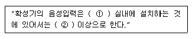
- ① 3W ② 1W
- ① 4W ② 2W
- ① 1W ② 3W
- ① 2W ② 4W
(정답률: 81%)
65. 옥내소화전설비로서 비상전원을 설치하는 경우, 자가발전 설비 또는 축전지설비는 정해진 기준에 따라 설치하여야 한다. 이 기준에 적합하지 않는 것은?
- 점검에 편리하고 화재 및 침수 등의 재해로 인한 피해를 받을 우려가 없는 곳에 설치한다.
- 옥내소화전설비를 유효하게 30분 이상 작동할 수 있도록 설치한다.
- 상용전원으로부터 전력의 공급이 중단된 때에는 자동으로 비상전원으로부터 전력을 공급 받을 수 있도록 설치한다.
- 비상전원의 설치장소는 다른 장소와 방화구획을 하여 설치한다.
(정답률: 76%)
66. 열반도체식 차동식분포형감지기 설치기준으로 옳은 것은?
- 부착높이가 8m 미만인 장소로 주요 구조부가 내화구조로 된 소방대상물은 감지기 1종은 40m2, 2종은 23m2이다.
- 부착높이가 8m 미만인 장소로 기타 구조의 소방대상물 또는 그 부분은 감지기 1종은 30m2, 2종은 23m2이다.
- 부착높이가 8m 이상 15m미만인 장소로 주요 구조부가 내화구조로 된 소방대상물은 감지기 1종은 50m2, 2종은 36m2이다.
- 하나의 검출기에 접속하는 감지부는 2개 이상 10개 이하가 되도록 하여야 한다.
(정답률: 62%)
67. 다음 중 감지기의 종별에 관한 설명으로 옳지 않은 것은?
- 보상식 스포트형 감지기는 차동식스포트형 감지기와 정온식스포트형 감지기의 성능을 겸한 것이다.
- 보상식 스포트형 감지기는 차동식스포트형 감지기 또는 정온식스포트형 감지기의 성능 중 어느 한 기능이 작동되면 작동신호를 발하는 것이다.
- 이온화식 감지기는 주위의 공기가 일정한 온도이상 되는 경우에 작동하는 것이다.
- 이온화식 감지기는 일국소의 연기에 의하여 이온전류가 변화하여 작동하는 것이다.
(정답률: 66%)
68. 유도등의 전선의 굵기는 인출선인 경우 단면적이 몇 mm2 이상이어야 하는가?
- 0.25 mm2
- 0.5 mm2
- 0.75 mm2
- 1.25 mm2
(정답률: 70%)
69. 전압이 종별을 구분할 때 저압의 기준으로 옳은 것은?(관련 규정 개정전 문제로 여기서는 기존 정답인 3번을 누르면 정답 처리됩니다. 자세한 내용은 해설을 참고하세요.)
- 직류 600 V 이하, 교류 600 V 이하
- 직류 750 V 이하, 교류 750 V 이하
- 직류 750 V 이하, 교류 600 V 이하
- 직류 600 V 이하, 교류 750 V 이하
(정답률: 82%)
70. 복도에 비상조명등을 설치한 경우 휴대용 비상조명등의 설치를 제외할 수 있는 시설로서 옳은 것은?
- 숙박시설
- 근린생활시설
- 아파트
- 다중이용업소
(정답률: 43%)
71. P형 1급 발신기의 구성요소가 아닌 것은?
- 보호판
- 누름버튼스위치
- 전화잭
- 위치표시등
(정답률: 52%)
72. 소방관서에 통보하는 자동화재속보설비에 관한 설명으로 옳지 않은 것은?
- 스위치는 바닥으로부터 0.8 m 이상 1.5 m 이하에 설치하여야 한다.
- 자동화재탐지설비와 연동으로 작동하여 자동으로 화재발생 상황을 소방관서에 전달되도록 한다.
- 속보기는 소방관서에 통신망을 통하여 통보하도록 한다.
- 관계인이 24시간 상시 근무하고 있는 경우에도 자동화재속보설비를 설치하여야 한다.
(정답률: 74%)
73. 비상콘센트설비의 정격전압이 220 V인 경우 가하는 절연내력 실효전압은?
- 220 V
- 500 V
- 1000 V
- 1440 V
(정답률: 57%)
74. 누전경보기의 영상변류기(ZCT) 절연저항시험 주위로서 옳지 않은 것은?
- 절연된 1차권선과 외부금속부 사이
- 절연된 1차권선과 단자판 사이
- 절연된 2차권선과 외부금속부 사이
- 절연된 1차권선과 2차권선 사이
(정답률: 58%)
75. 광전식분리형 감지기의 광축의 높이는 천장 등 높이의 몇 % 이상이어야 하는가?
- 30 %
- 50 %
- 70 %
- 80 %
(정답률: 80%)
76. 터널 내에 비상콘센트를 설치하는 경우 주행차로의 우측측벽에 얼마 이내의 간격으로 설치하여야 하는가?
- 30 m
- 50 m
- 70 m
- 100 m
(정답률: 77%)
77. 비상조명등에 관한 설치기준으로 옳은 것은?
- 조도는 1lx 이고 예비전원의 축전지용량은 10분 이상 비상조명을 작동시킬 수 있어야 한다.
- 예비전원을 내장하는 비상조명등에는 축전지와 예비전원 충전장치를 내장하여야 한다.
- 비상조명등에는 점검스위치를 설치하여서는 아니 된다.
- 예비전원을 내장하지 않는 비상조명기구는 사용할 수 없다.
(정답률: 61%)
78. 무선통신보조설비의 무선기기 접속단자의 설치기준으로 옳지 않은 것은?
- 단자의 보호함의 표면에 “무선기 접속단자”라고 표시한 표지를 한다.
- 접속단자는 수위실 등 상시 사람이 근무하는 장소에 설치한다.
- 지상에 설치하는 접속단자는 수평거리 200 m 이내마다 설치한다.
- 접속단자는 바닥으로부터 높이 0.8 m이상 1.5 m이하의 위치에 설치한다.
(정답률: 78%)
79. 자동화재탐지설비의 경계구역 설정기준으로 옳지 않은 것은?
- 하나의 경계구역이 2개 이상의 건축물에 미치지 않을 것
- 하나의 경계구역이 2개 이상의 층에 미치지 않을 것
- 하나의 경계구역의 면적은 500 m2 이하로 할 것
- 한 변의 길이는 50m 이하로 할 것
(정답률: 72%)
80. 누전경보기 수신부의 기능검사 항목이 아닌 것은?
- 충격시험
- 진공가압시험
- 과입력전압시험
- 전원전압변동시험
(정답률: 61%)